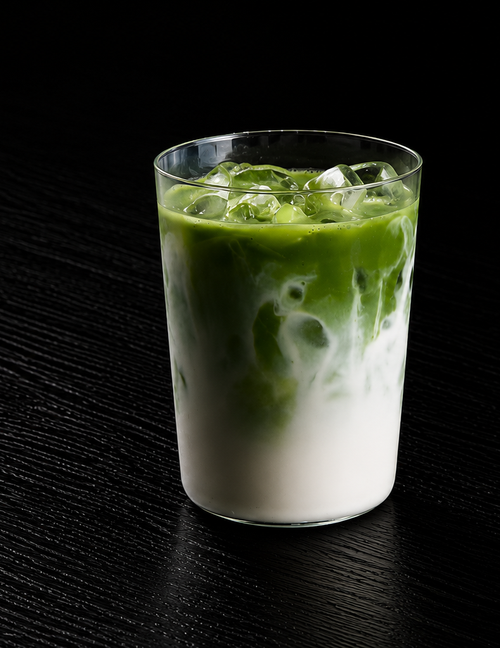

Our Story
From Osaka's Backstreets to Chicago
Maru Tako started with one simple idea: bring the smoky, bubbling street stalls of Osaka's Dotonbori to Chicago. Every ball of takoyaki is hand-turned on a cast-iron griddle, filled with real octopus, and finished the way it's been done for generations — a swipe of tonkatsu sauce, a drizzle of Kewpie mayo, a shower of bonito flakes dancing in the steam.
We're a small team who believes street food should stay honest: fresh batter mixed daily, no shortcuts, and toppings built for both purists and the adventurous — think truffle parmesan, spicy mayo, or Chicago fire. Pair it with a cold Japanese soda and you've got a little piece of Osaka on your block.
